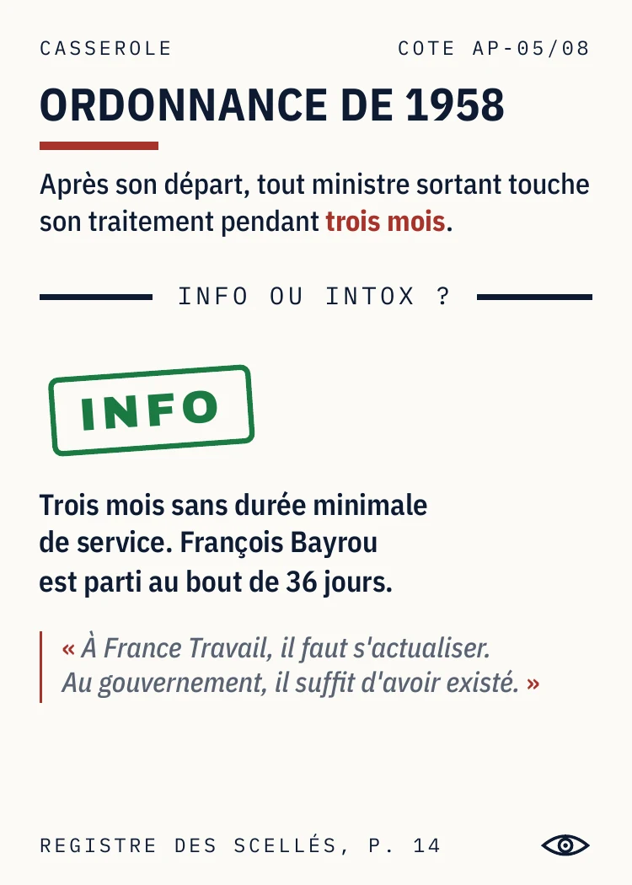

Les yeux
dans les yeux
Un party game où toutes les dingueries de la politique française sont vraies, jugées ou déclarées publiquement, et sourcées carte par carte.
L'INA rencontre Blanc Manger Coco
À chaque tour, le Porte-parole lit une Casserole. La table vote Info ou Intox, les yeux dans les yeux. Les Magouilles (49.3, Kompromat, Grâce présidentielle) font le reste. Le premier à 50 % passe son grand oral et se fait élire.
Le premier jeu d'archives, pas un énième jeu de satire : il existe des jeux qui inventent des situations politiques parodiques. Ici, rien n'est inventé. C'est la véracité qui produit le comique.
Fiche technique
Trois raisons d'y croire
1. Tout est vrai, et ça se prouve. Du jugé et du déclaré public, rien d'autre. Chaque carte a sa page au Registre des scellés. Le juridique est bordé. Pièces en annexe.
2. Tous les bords, toute la Ve. La carte dit le fait, la table décide du reste. De 1958 à 2026, même barème pour tous les bords. Le seul endroit où ils sont traités pareil.
3. Un gisement renouvelable. 2 700 faits identifiés, 200 cartes en boîte. Le reste attend son millésime. La matière première se renouvelle à chaque législature, sans effort de notre part.
Quelques pièces



À télécharger
La règle complète (4 pages), la règle en 1 page, le Registre des scellés (33 pages, la preuve de chaque carte) et un jeu de cartes du prototype, en PDF ou en boîte. Un mail suffit, réponse sous 48 h.
Où le voir
Nuits du Off, Festival International des Jeux de Cannes, du 23 au 27 février 2027, dont les deux soirs réservés aux professionnels les 23 et 24. Une partie se joue en trente minutes, un verre dans la main.
Une vidéo de table et des photos du prototype arrivent avec la réimpression d'octobre 2026.
Quentin Grimal, auteur
contact@lesyeuxdanslesyeux.info
lesyeuxdanslesyeux.info
Cinq Casseroles à trancher en ligne, pour sentir la table.